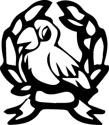

Mas haverá mesmo OBB em 2014?
Posted in Olimpíadas on janeiro 17th, 2014 by Cassio dos Santos Sousa – 5 Comments
Uma notícia presente na Folha Dirigida datando de 19 de dezembro de 2013 trouxe ao mundo olímpico uma triste surpresa: o CNPq, órgão responsável por financiar cerca de 80% da OBB, decidiu suspender as verbas destinadas à olimpíada este ano. Como a olimpíada trabalha sobre inscrições gratuitas, diversas fases da competição estão comprometidas, e a olimpíada, apesar de já estar com inscrições abertas há algum tempo, pode nem mesmo acontecer em 2014.
A revolta do pessoal do grupo de apoio do OC foi imediata (até uma petição já foi feita). Quando fui repassar a notícia na fanpage do OC, acabei deletando a primeira versão. Como a ação de muitas pessoas que concordam com alguma notícia no Facebook é curti-la, não faria sentido curtir uma notícia triste. Então, acrescentei o seguinte parágrafo, em nome desta primeira reação de muitos:
Toda olimpíada nacional já consolidada tem seu apelo, seu público e sua relevância. Tomar qualquer uma delas como não-prioritária é ignorar todo o crescimento de milhares de alunos que a fizeram e que cresceram por conta dela.
O que disse acima não é mais novidade ao mundo olímpico. Meus próximos comentários, muito possivelmente, também não.
A OBB já trabalha com pouca verba há muito tempo. Se vocês virem as equipes brasileiras da IBO ao longo dos anos, você verá que não houve participação brasileira em 2007, e o motivo presente no site foi a falta de verba. No ano retrasado, acompanhando um pouco da jornada do Ivan em sua ida à OIAB, vi que, se não fosse pelo financiamento dos colégios dos alunos envolvidos (Objetivo inclusive), não haveria time para aquela Ibero. Isso já acontece há bastante tempo, e a necessidade de financiamentos externos assim já passou a ser dependência.
Chamar qualquer olimpíada nacional consolidada de “patinho feio” e não financiá-la por falta de prioridade (ponto apontado na notícia pelo CNPq) é besteira. Qualquer motivo além da falta de verba (a qual também é questionável, já considerando fora a verba para Copa e Jogos Olímpicos) é besteira, ou facilmente refutável.
A prova é muito difícil, e pode estar incentivando poucos alunos a perseguirem a Biologia, a Medicina ou áreas do gênero? Quando procurei pelos primeiros participantes da IBO, vários deles acabaram cursando Medicina, e alguns amigos de colégio faziam apenas a OBB em nome dos cursos que queriam fazer, os quais dependiam da área. Outro motivo: a OBM, a olimpíada nacional mais difícil para alguém que só tenha conhecimentos de sala de aula, deveria então sofrer até mais por conta disso, e sua verba não parece ter sido cortada (ainda).
A Biologia não é (mais) uma área prioritária para o país? Para mim, toda prova que avalie o Ensino Fundamental ou Médio, ao menos em termos de padrões internacionais, pede (ou deveria pedir) Ciências como avaliação separada de Interpretação de Texto e Matemática, e Biologia é a base das aulas vistas desde os primeiros anos do Fundamental. E pelo que vi nas notas do PISA, a nota do Brasil em Ciências não é muito melhor do que as demais. Achar que apenas Português e Matemática devem ser prioridades é uma mentalidade antiquada pra caramba, e se o país ainda precisa dar atenção nestas áreas, então o problema pode até ser maior, mas duvido que a investida correta devesse ter sido feita em cima de uma iniciativa em Educação.
Acabou o dinheiro para Educação? Como bem lembrado por alguns dos meus amigos, o Ciência sem Fronteiras (CsF) se propôs a dar um bilhão para financiar diversos alunos, alguns dos quais pouco fazem para merecer a bolsa que recebem. Alguns realmente fazem até mais do que a bolsa pede, isso eu não posso negar, mas dado que o programa diz ter vaga sobrando (a ponto de abrir novas inscrições por conta do número de bolsas – dinheiro – que eles se propuseram a investir), então há dinheiro.
Estou tentando uma bolsa no CsF sim, e já até cheguei a comentar isso em algum dos outros posts (e não, não penso em fazer pouco desta bolsa – se é para sair do meu país, que seja para algo muito foda). No entanto, se for para ver a OBB acontecer, deixaria de ir tranquilamente, se fosse para esse dinheiro ser investido diretamente na OBB.
Já vi olimpíadas nascerem e morrerem no meu Ensino Médio. Não cheguei a ver uma olimpíada nacional morrer. Se a OBB deixar de acontecer em 2014, então esta será uma punição exemplar às demais olimpíadas que teimarem em existir. O país tem outras prioridades, investir em Educação é algo muito caro, e o mundo olímpico não é prioridade. Xeque-mate.
Se algum órgão capaz de investir dinheiro na OBB ler esta notícia, peço que, pelo menos, considerem ajudar a X OBB. Se ela, como olimpíada nacional, já respira com dificuldade para trazer bons resultados ao país e preparar alunos para a Biologia com maestria, é porque ela tem de existir.
Aposto diversas fichas que, mesmo sem esta verba, sim, ocorrerá a OBB 2014. Cortar verbas será como cortar seu oxigênio, mas a OBB, como todo bom ser vivo, pode acabar se adaptando, até mesmo aos ambientes mais inóspitos. É esperar para ver.